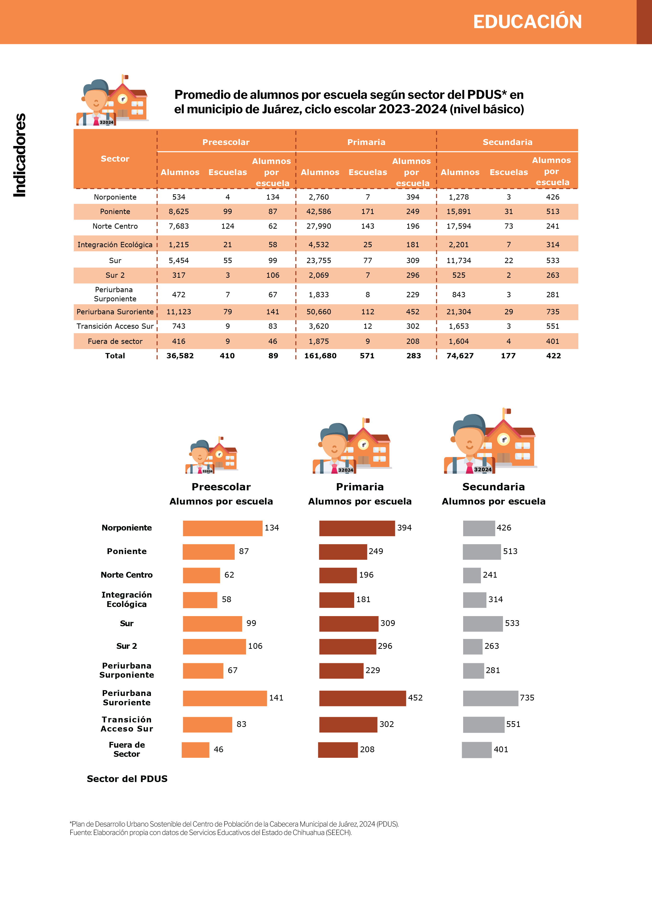
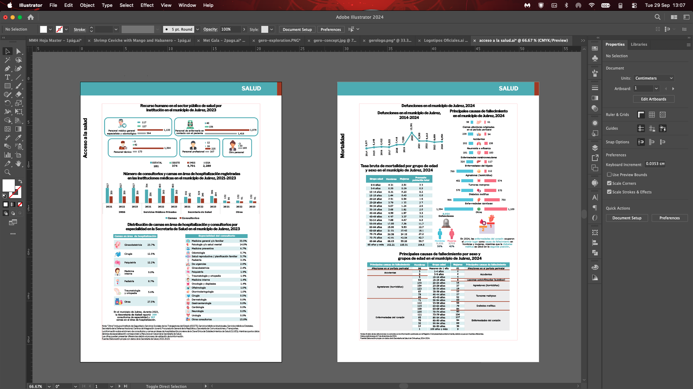

Interior Layout
A modular grid system allowed for flexible content placement while maintaining visual consistency across 200+ pages.


Complete color system and interior layout design for the official 2024–2025 municipal planning report — a 200+ page book with over 40 data visualizations.
The Municipal Institute of Planning (IMIP) of Ciudad Juárez publishes an annual diagnostic report covering demographics, health, education, economy, mobility, environment, and more. For the 2024–2025 edition, I was commissioned to design the complete interior layout and create all editorial graphics.
The challenge was monumental: over 200 pages of dense statistical data that needed to feel accessible, authoritative, and visually coherent. I designed the full color system and executed the layout for three major sections: Health, Education, and Environment.
I designed a 12-color system for the complete 200+ page publication. Two primary navigation colors mark page indicators, running headers, and border plecas throughout the book. Ten distinct section colors give each chapter its own visual identity.
Primary Colors — Navigation Bars
Section Colors — One per Chapter
Showing 3 of 10 section colors designed for the complete Radiografía 2024–2025.
Salud · Educación · Medio Ambiente
Aa Bb Cc Dd Ee Ff Gg · 0123456789
Clean, structural, authoritative. Built for data clarity.
El municipio de Juárez cuenta con 1,512,450 habitantes según el Censo de Población y Vivienda 2020. La densidad poblacional es de 4,231 habitantes por km².
Aa Bb Cc Dd Ee Ff Gg · 0123456789
A modular grid system allowed for flexible content placement while maintaining visual consistency across 200+ pages.


Editorial design that turns complex information into compelling reading.
or email makne.info@gmail.com